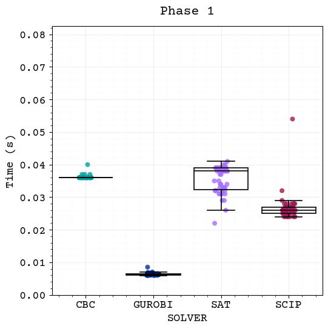
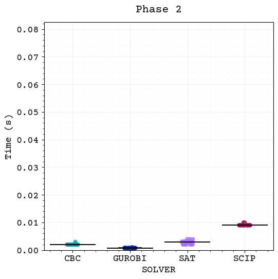
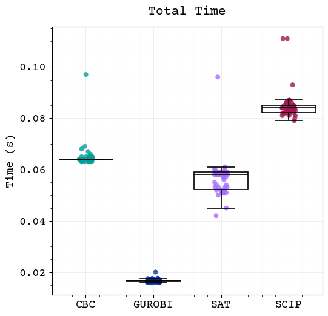

In this section, we present the experimental results obtained from the proposed optimization framework. The experimentation is structured into two distinct phases. First, we conduct a comparative performance analysis of four different solvers using the distilled model described in Graph-Based Corridor Model. Second, utilizing the best-performing solver, we execute the full MILP model Integer Linear Programming Model with \(\alpha = 0.5\) value to observe the full model trade-off performance.
The experimental framework was implemented in Python. We utilized the Google OR-Tools library [1] to access the open-source solvers CBC [2] and SCIP [3], as well as Google’s native CP-SAT solver [4]. Additionally, the commercial solver Gurobi [5] was integrated into the pipeline. All experiments were conducted on a workstation with an AMD Ryzen 5 7600X processor (6 cores, 4.70 GHz) and 32 GB of DDR5 RAM.
Environment Setup and Configuration
First, we establish our working environment. This includes importing necessary libraries for data manipulation, visualization, and statistical analysis. We also configure the plotting aesthetics to ensure our visualizations are clear and professional.
Next, we load the experimental results. The data is formatted to facilitate analysis.
Code
exp = pd.read_csv("../../data/experiments/graph_model_solver_experiment.csv")exp = exp.rename( columns={"TIEMPO": "TIME","FASE": "PHASE" })exp["PHASE"] = exp["PHASE"].str.replace("fase", "phase")exp = exp.pivot_table( index=["SOLVER", "RUN"], columns="PHASE", values=["TIME"]).reset_index()exp.columns = [col[1] if col[1] else col[0] for col in exp.columns]phases = [col for col in exp.columns if"phase"instr(col)]exp["total"] = exp[phases].sum(axis=1)exp["SOLVER"] = exp["SOLVER"].str.upper()exp
SOLVER
RUN
phase1
phase2
phase3
total
0
CBC
1
0.037
0.003
0.027
0.067
1
CBC
2
0.036
0.002
0.026
0.064
2
CBC
3
0.036
0.002
0.026
0.064
3
CBC
4
0.036
0.002
0.026
0.064
4
CBC
5
0.036
0.002
0.026
0.064
...
...
...
...
...
...
...
195
SCIP
46
0.024
0.009
0.046
0.079
196
SCIP
47
0.028
0.009
0.049
0.086
197
SCIP
48
0.025
0.009
0.048
0.082
198
SCIP
49
0.028
0.009
0.049
0.086
199
SCIP
50
0.028
0.009
0.048
0.085
200 rows × 6 columns
Visualization
To understand the performance of different solvers across various phases, we create visualizations that combine strip plots and box plots. This allows us to see both the distribution of individual data points and summary statistics.
First, we can observe performance differences between the solvers across all phases and in total. Second, the points within each solver are tighly clustered, suggesting low variation in performance across runs. Finally, a visual inspection suggests that data may not be normally distributed and variances may differ between solvers, which we will formally test in the next section.
Code
# Define a color palettepalette = ["#009d9a", # cbc"#002d9c", # gurobi"#a56eff", # sat"#9f1853", # scip]# Number of phases + totaltargets = phases + ['total']num_caption = ["(a)", "(b)", "(c)"]# get global max for y-axis, excluding total columny_max = exp[phases].max().max() *1.1## Create plots for each targetfor i, target inenumerate(targets):# Create figure and axis fig, ax = plt.subplots(figsize=(6, 6))# Plot stripplot sns.stripplot( data=exp, # dataset x="SOLVER", # x-axis y=target, # y-axis (time) hue="SOLVER", legend=False, ax=ax, alpha=0.8, # point transparency# useful when there are many overlapping points jitter=True, size=6, # point size palette=palette, # color palette zorder=0# draw below the boxplot )# Plot boxplot sns.boxplot( data=exp, x="SOLVER", y=target, ax=ax,# Outliers already shown in stripplot showfliers=False, boxprops={'facecolor':'none', # transparent box, better visibility of stripplot'edgecolor':'black', # black border'linewidth': 1.25 },# consistent color for whiskers whiskerprops={'color':'black','linewidth': 1.25 },# consistent color for caps capprops={'color':'black','linewidth': 1.25 },# consistent color for medians medianprops={'color':'black','linewidth': 1.25 }, width=0.8, zorder=1# draw above the stripplot )# Customize plotif target =='total': ax.set_title("Total Time", pad=15) ax.set_xlabel("")else: ax.set_title(f"{target[:-1].capitalize()}{target[-1]}", pad=15) ax.set_ylim(0, y_max) ax.set_ylabel("Time (s)")# Professional look ax.grid(True, which='major', linestyle='-', linewidth=0.75, alpha=0.2) ax.minorticks_on() ax.grid(True, which='minor', linestyle='-', linewidth=0.25, alpha=0.10) ax.set_axisbelow(True)# Save figures readily for report filename =f"../../data/figures/plot_{target}.pdf" plt.savefig(filename, format='pdf', bbox_inches='tight', dpi=300)



Statistical Analysis
Assumtions Checking
As a prerequisite for many statistical tests, we need to verify if our data meets certain assumptions, specifically normality and homogeneity of variances in onder to choose the appropriate statistical tests. If these assumptions are violated, we will proceed with non-parametric tests.
Normality: To determine if the solver times follow a normal distribution, we used the Shapiro-Wilk test [6]. The test statistic \(W\) is defined as:
\[
W = \frac{(\sum_{i=1}^{n} a_i x_{(i)})^2}{\sum_{i=1}^{n} (x_i - \bar{x})^2}
\]
Where \(x_{(i)}\) are the ordered sample values and \(a_i\) are constants generated from the means and covariances of the order statistics.
\(H_0\): The population is normally distributed.
\(H_1\): The population is not normally distributed.
We reject \(H_0\) if \(p < 0.05\)
As seen in the output, the p-values for all solvers across all phases are significantly below 0.05 (e.g., \(p \approx 0.000\)). This indicates that the data is not normally distributed.
Homogeneity of Variance: To verify if the variances are equal across different solvers (homoscedasticity), we applied Levene’s test [7]. The test statistic \(W\) is calculated as:
Where \(k\) is the number of groups (solvers), \(N\) is the total sample size, and \(Z_{ij} = |Y_{ij} - \tilde{Y}_{i\cdot}|\) (absolute deviation from the group median).
\(H_0\): The population variances are equal (\(\sigma^2_1 = \sigma^2_2 = \dots = \sigma^2_k\)).
\(H_1\): At least one variance is different.
We reject \(H_0\) if \(p < 0.05\)
We checked if the variances were equal across groups. With the exception of Phase 3, the p-values were below 0.05, indicating heteroscedasticity (unequal variances).
for target in targets:print(f"--- Assumptions for {target} ---")# check normality (Shapiro-Wilk)# check p-value. If p < 0.05, we reject normalityfor solver in exp["SOLVER"].unique(): stat, p = stats.shapiro(exp[exp["SOLVER"] == solver][target])print(f"Shapiro ({solver}): p={p:.6f}")# check homogeneity of variance (Levene)# If p < 0.05, variances are different. solvers_data = [group[target].values for name, group in exp.groupby("SOLVER")] stat, p_levene = stats.levene(*solvers_data)print(f"Levene Test: p={p_levene:.6f}\n")
As the assumptions for ANOVA [8] were not met, we proceed with the Kruskal-Wallis H-test [9], a non-parametric alternative that does not assume normality or homogeneity of variances. This test will help us determine if there are statistically significant differences between the solvers for each target metric. The \(H\) statistic is given by:
\[
H = \frac{12}{N(N+1)} \sum_{i=1}^{k} \frac{R_i^2}{n_i} - 3(N+1)
\]
Where \(R_i\) is the sum of ranks for group \(i\), and \(n_i\) is the number of observations in group \(i\).
\(H_0\): The population medians of all groups are equal.
\(H_1\): At least one population median is different from the others.
We reject \(H_0\) if \(p < 0.05\)
The results yielded extremely low p-values (\(p < 10^{-37}\)) for all phases and the total time. This allows us to reject the null hypothesis and confirm that there are significant statistical differences in performance between the solvers in every phase of the experiment.
print("### Kruskal-Wallis H-Test Results ###")significant_targets = []for target in targets:# Group data by solver groups = [group[target].values for name, group in exp.groupby("SOLVER")]# Perform Kruskal-Wallis stat, p_value = stats.kruskal(*groups)print(f"{target.upper()} | Statistic: {stat:.2f}, p-value: {p_value:.2e}")if p_value <0.05:print(f"Significant differences found in {target}.") significant_targets.append(target)else:print(f"No significant differences in {target}.")print("-"*30)
### Kruskal-Wallis H-Test Results ###
PHASE1 | Statistic: 162.31, p-value: 5.82e-35
Significant differences found in phase1.
------------------------------
PHASE2 | Statistic: 188.32, p-value: 1.41e-40
Significant differences found in phase2.
------------------------------
PHASE3 | Statistic: 182.71, p-value: 2.29e-39
Significant differences found in phase3.
------------------------------
TOTAL | Statistic: 181.76, p-value: 3.68e-39
Significant differences found in total.
------------------------------
Post-hoc Analysis
Having established that significant differences exist among the solvers, we now conduct a post-hoc analysis using Dunn’s test [10]. This test allows us to perform pairwise comparisons between the solvers to identify which specific pairs differ significantly. The \(z\)-test statistic for comparing group \(i\) and group \(j\) is:
Where \(\bar{R}\) represents the mean rank of the group. To control for the family-wise error rate due to multiple comparisons, we applied the Bonferroni correction:
\[
\alpha_{adjusted} = \frac{\alpha}{m}
\]
Where \(m\) is the number of pairwise comparisons
\(H_0\): There is no difference between the two groups.
\(H_1\): There is a difference between the two groups.
We reject \(H_0\) if \(p < \alpha_{adjusted}\)
The resulting matrices of p-values reveal the following:
Phase 1: hile most solvers differ significantly, CBC and SAT show no statistically significant difference (\(p=1.0\)).
Phases 2 and 3: In these phases, all pairwise comparisons yield \(p < 0.05\), suggesting distinct performance profiles for each solver.
Total: The aggregated view confirms that globally, the solvers have significantly different performance characteristics, with the lowest p-values found when comparing GUROBI and SCIP against the others.
if significant_targets:print("### Post-hoc Analysis (Dunn's Test) ###")for target in significant_targets:print(f"\n--- Pairwise comparisons for {target} ---")# Dunn's test# p_adjust='bonferroni' corrects for doing multiple tests to avoid False Positives dunn_results = sp.posthoc_dunn(exp, val_col=target, group_col='SOLVER', p_adjust='bonferroni')print(dunn_results)
### Post-hoc Analysis (Dunn's Test) ###
--- Pairwise comparisons for phase1 ---
CBC GUROBI SAT SCIP
CBC 1.000000e+00 2.325443e-25 1.000000e+00 2.079205e-08
GUROBI 2.325443e-25 1.000000e+00 1.170744e-26 1.829275e-05
SAT 1.000000e+00 1.170744e-26 1.000000e+00 3.738267e-09
SCIP 2.079205e-08 1.829275e-05 3.738267e-09 1.000000e+00
--- Pairwise comparisons for phase2 ---
CBC GUROBI SAT SCIP
CBC 1.000000e+00 7.089410e-06 2.393183e-03 2.689430e-16
GUROBI 7.089410e-06 1.000000e+00 2.689430e-16 2.425579e-39
SAT 2.393183e-03 2.689430e-16 1.000000e+00 7.089410e-06
SCIP 2.689430e-16 2.425579e-39 7.089410e-06 1.000000e+00
--- Pairwise comparisons for phase3 ---
CBC GUROBI SAT SCIP
CBC 1.000000e+00 2.302696e-17 1.815192e-04 1.815192e-04
GUROBI 2.302696e-17 1.000000e+00 3.854149e-05 4.834477e-37
SAT 1.815192e-04 3.854149e-05 1.000000e+00 4.341926e-16
SCIP 1.815192e-04 4.834477e-37 4.341926e-16 1.000000e+00
--- Pairwise comparisons for total ---
CBC GUROBI SAT SCIP
CBC 1.000000e+00 2.907454e-17 1.912595e-04 1.869560e-04
GUROBI 2.907454e-17 1.000000e+00 4.128985e-05 7.430566e-37
SAT 1.912595e-04 4.128985e-05 1.000000e+00 5.083186e-16
SCIP 1.869560e-04 7.430566e-37 5.083186e-16 1.000000e+00
Now, we generate the map for the best solver found in the experiments (Gurobi) using the full MILP model with \(\alpha = 0.5\)
Code
from pathlib import Pathimport sysimport geopandas as gpdfrom folium.plugins import Fullscreen# Navigate to the src directory which contains the models packagesrc_path = Path(__file__).parent.parent if"__file__"indir() else Path(".").resolve().parentifstr(src_path) notin sys.path: sys.path.insert(0, str(src_path))# Alternative: if running from the document directory, try multiple pathsfor potential_path in [Path(".").parent, Path(".").parent.parent, Path(".."), Path("../src")]: resolved = potential_path.resolve()if (resolved /"models").exists() andstr(resolved) notin sys.path: sys.path.insert(0, str(resolved))breakfrom models.visualization import load_solution_summary, create_solution_pdfgdf = gpd.read_parquet("../../data/processed_dataset.parquet")summary = load_solution_summary("../../data/experiments/summaries/modelling_multi_species_alpha_0.5_summary.json")create_solution_pdf( gdf, summary, output_path="../../data/figures/solution_map_gurobi_alpha_0.5.pdf", save=False)
S. S. Shapiro and M. B. Wilk, “An analysis of variance test for normality (complete samples),”Biometrika, vol. 52, no. 3–4, pp. 591–611, 1965.
[7]
H. Levene, “Robust tests for equality of variances,”Contributions to Probability and Statistics: Essays in Honor of Harold Hotelling, pp. 278–292, 1960.
[8]
R. A. Fisher, Statistical methods for research workers, 12th ed. Edinburgh, UK: Oliver; Boyd, 1954.
[9]
W. H. Kruskal and W. A. Wallis, “Use of ranks in one-criterion variance analysis,”Journal of the American Statistical Association, vol. 47, no. 260, pp. 583–621, 1952.
[10]
D. B. Duncan, “Multiple range and multiple f tests,”Biometrics, vol. 11, no. 1, pp. 1–42, 1955.